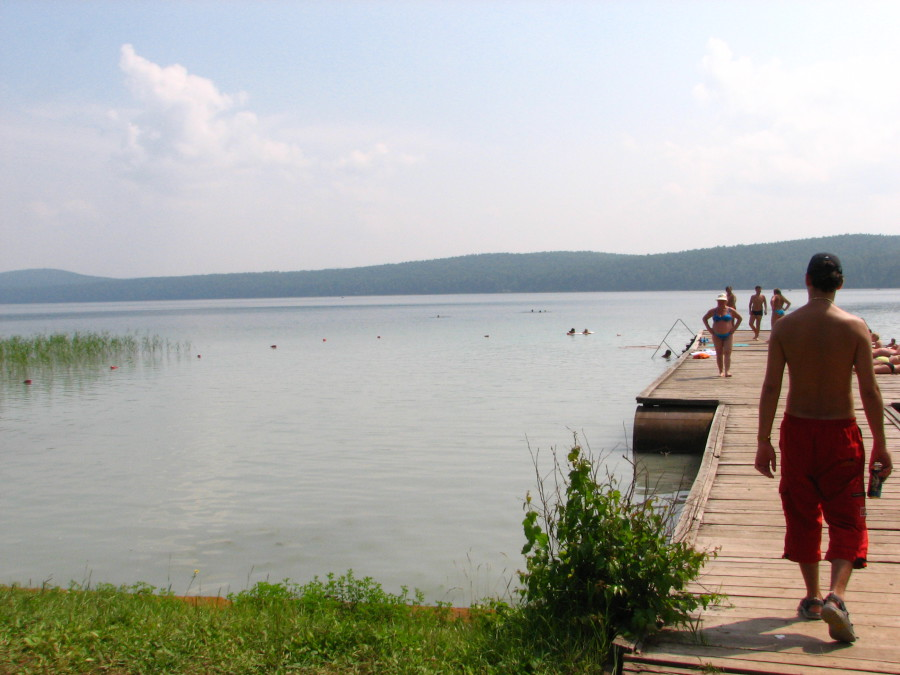

На прошлых выходных ездили отдыхать на озеро Инголь.
Дорога до озера никому не обещала быть асфальтированной, но по моим прикидкам около 70 километров щебеночного полотна утомят любого. Сама протяженность пути увеличилась километров на 15 из-за того, что из Тисуля мы поехали мягко говоря не в ту сторону, пришлось возвращаться и искать выезд на Шарыпово. Выезд был найден и поменяв асфальтированную неправильную дорогу на правильную, но щебеночную мы поехали в сторону Красноярского края. По пути нам попался шлагбаум посреди леса около которого с машины собирали по 25 рублей на ремонт моста и ГАИшник, остановивший нас за то что мы проехали мимо знака STOP в третьем часу ночи.
Через несколько километров после гаишника мы смогли наконец-то увидеть, нет не гладь озера, мы смогли увидеть нехилое скопление палатокавтомобилейвыпивающеотдыхающеспящих туристов. В условиях ночной темноты при помощи одного фонарика мы нашли подходящую поляну и, разбив лагерь, легли спать.
Само озеро запомнилось прозрачной водой, аквалангистами, жарким солнцем и лечебной грязью.

Инголь запомнился прозрачной водой и лечебной грязью
Вода Про само озеро и воду ходит много легенд. Говорят, например, что у озера нет дна. Что оно через разлом соединено с Байкалом, и когда вода из одного озера перетекает в другое слышен характерный шум. Доподлинно известно, что в воде Инголя достаточно монго серебра. именно из за его присутствия вода в озере никогда не цветет.
Аквалангисты Мы искренне думали, что аквалангисты ищут двух человек, которые утонули 22 июня, как нам рассказал один из наших попутчиков. Уже приехав в город мы увидели, что утонули люди год назад, а аквалангисты по часу готовившиеся к погружению просто-напросто увлеченные люди.
Жаркое солнце В общем солнце было не всегда, иногда случался и дождь, но такой летний не обременительный дождь, который просто лился на землю, чтобы создать комфортные условия для слепней и оводов.
Лечебная грязь Что касается грязи, то для себя я вывил одну нехитрую, но гарантированно работающую закономерность. Чем больший лишний вес имеет женщина, тем с большей вероятностью она будет ходить по пляжу измазавшись в целительной глине. Правда я подозреваю, что глина эта в борьбе с лишним весом помощник не особый